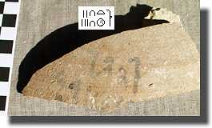

|
|||||
Friday 31 DecemberWe opted for an easy day off. In the morning we went to download the penultimate instalment of this diary and then visited a couple of people on the way back to say goodbye. In the evening we were invited to iftar, the meal which ends the daily fast of Ramadan, with Ahmed Mostafa and Ahmed Saleh. The first Ahmed had been studying with me in England during the summer and he very kindly came all the way down to Luxor to see me. Ahmed Saleh, the Director of the Luxor Mummification Museum, is a great friend of his, and we had a very pleasant two hours together. Party-hoppers that we are, we then went on to Chicago House where we were invited to their festivities for New Year. It was extremely pleasant; mindful of the fact that we had to be at work at 7:00 the next morning, we didn't sit out the New Year with them, or with the Italians and Polish on the West Bank, but went back and watched in the year 2000 on the roof of the hotel. Spot the difference below...
|
|||||
Saturday 1 January 2000We seem to be the only foreign mission working today, but then we are leaving tomorrow. I completed the collation of the drawings of the paintings and took some photos, while Helen drew objects and moved pottery around with Abdel-Rahman. We went down the two remaining shafts which contain objects from previous seasons, so that we know where everything is for next year. Here's one of the odder objects. It is made of wood, over which is a layer of papyrus painted blue-green. We're as yet unsure what it is.
On our way home we had a look at the stela outside the tomb of Khaemhat (TT57). This shows a number of the Opening of the Mouth instruments, and we hope it will be constructive to make a comparison with the objects we have found. In this picture you can see adzes at the top, and in the second row is the leg of an ox and also a finger, just like we have in |
|||||
Sunday 2 JanuaryThe last day of the season can be terrible. I remember getting in an awful panic in previous seasons when there was still so much to do in the aftermath of the digging. We hoped that this one would be better, as we had had the time to prepare ourselves for the end of the season without the unexpected events of digging. For example, all the pottery had been put away, and we had got the objects organised. Anyway, we started off with the aim of doing 2/3 hours of work on the finds before clearing up. Helen continued to draw, and I to make some tracings and to take photos. We have ended up making substantial progress towards completing the programme we set ourselves.
By 10:30, we were starting to tidy up. Even with the fact that we were more organised than usual, and we had a lot of help from Abdel-Rahman, it still took the best part of three hours to get everything away, very well-organised by Helen. Then the tomb has to be sealed up and the various record books filled out in which all openings and closings are recorded. This photo shows Abdel-Rahman and Sheikh Hassan, the chief guard, doing just this, with the sealed padlock in the background.
In the evening, we had a visit from Jiro Kondo, the head of the Japanese mission which works in the tomb of Amenhotep III. He has recently been working on a lot of the ostraka from that tomb, and we happened to show him some of our digital photos. In one of them he noticed what is most probably a date of year 25 on one of the vessels from the Senneferi burial chamber; while this doesn't give us a date for the burial, it certainly shows that we must be looking at the second half of the reign of Thutmose III, as we suspected. |
|||||
Monday 3 JanuaryNo going back now. We're on the road looking for a taxi at 6:05, and get to the airport in not much more than 35 minutes--pretty good for two taxis and a ferry. As I write this, we're 90 minutes out of Luxor on our way to London. All good things must come to an end, but we certainly not relishing the thought of the UK in January! Thanks for reading. All the best for the New Year! |
|||||
|
All text and images © Nigel Strudwick 2000
|
|||||
 The Dig Diary 1999--Part 11 (Final)
The Dig Diary 1999--Part 11 (Final)© Nigel Strudwick 1997-2016